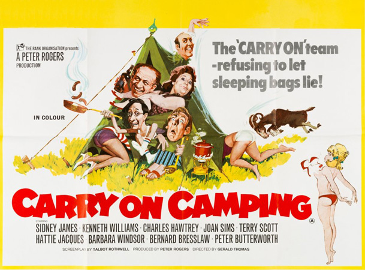

Peter Rogers
David Seaforth (uncredited)
Sid Boggle (Sid James) and his friend Bernie Lugg (Bernard Bresslaw) are partners in a plumbing business. They take their girlfriends, prudish Joan Fussey (Joan Sims) and meek Anthea Meeks (Dilys Laye), to the cinema to see a film about a nudist camp called Paradise. Sid has the idea of the group holidaying there, reasoning that in that environment; their heretofore chaste girlfriends will relax their strict moral standards. Sid easily gains Bernie's co-operation in the scheme, which they attempt to keep secret from the girls.
They travel to the campsite named Paradise. After paying the membership fees to the owner, money-grabbing farmer Josh Fiddler (Peter Butterworth), Sid realises it is not the camp seen in the film, but merely a standard family campsite. To add to their disappointment, it is no paradise but instead, a damp field; the only facilities being a very basic toilet and a washing block. They reluctantly agree to stay there after Fiddler refuses a refund and the girls approve of the place. There is further disappointment when the girls will not share a tent with the boys.
Sid and Bernie soon set their sights on a bunch of young ladies on holiday from the Chayste Place finishing school. The ringleader of the girls is blonde and bouncy Babs (Barbara Windsor). In charge of the girls is Dr. Soaper (Kenneth Williams), who is fervently pursued by his lovelorn colleague, the school's matron, Miss Haggard (Hattie Jacques). The girls soon leave for Ballsworth Youth Hostel, where Babs and her friend Fanny (Sandra Caron) change the room numbers on Dr. Soaper's and Miss Haggard's doors and convince Dr. Soaper that the female washroom, where Miss Haggard is, is the male washroom. Dr. Soaper leads an outdoor aerobics session, during which Babs' bikini top flies off; he catches it.
Other campers are Peter Potter (Terry Scott), who hates camping but must endure his jolly yet domineering wife Harriet (Betty Marsden), with her hideous braying cackle, and naive first-time camper Charlie Muggins (Charles Hawtrey).
Chaos ensues when a group of hippies arrive in the next field for a noisy all-night rave led by band The Flowerbuds. The campers club together and successfully drive the ravers away, but all the girls leave with them. However, there is a happy ending for Bernie and Sid when their girlfriends finally agree to move into their tent. Their joy is short-lived when Joan's mother (Amelia Bayntun) turns up, but Anthea lets loose a goat that chases Mrs Fussey away.
Filming dates: 7 October – 22 November 1968.
Interiors: Pinewood Studios, Buckinghamshire.
Exteriors: (1) Pinewood Studios, Buckinghamshire. The studios' orchard doubled for Paradise Camp, (2) Chayste Place school is the management block at Pinewood Studios, better known as Heatherden Hall and featured in Carry On Nurse, Carry On Up the Khyber, Carry On Again Doctor, Carry On at Your Convenience and Carry On England, (3) Pinewood Green, Iver Heath housing estate, Buckinghamshire, (4) Everyman Cinema, Gerrards Cross, Buckinghamshire, (5) Maidenhead High Street, (6) Black Park, Buckinghamshire.
The film was the most popular movie at the UK box office in 1969.
It was voted the nation’s favourite Carry On film in a survey conducted by the Daily Mirror in 2008.
Variety - "While sticking to its well tried, profitable formula, the latest Carry on suffers somewhat in comparison to some of its predecessors in that it lacks a storyline, however slim."
New York Times - "a movie that proceeds partly by pratfall but mostly by a merciless succession of double entendres, which somehow excite the prurient interest of everybody except, perhaps, the audience."